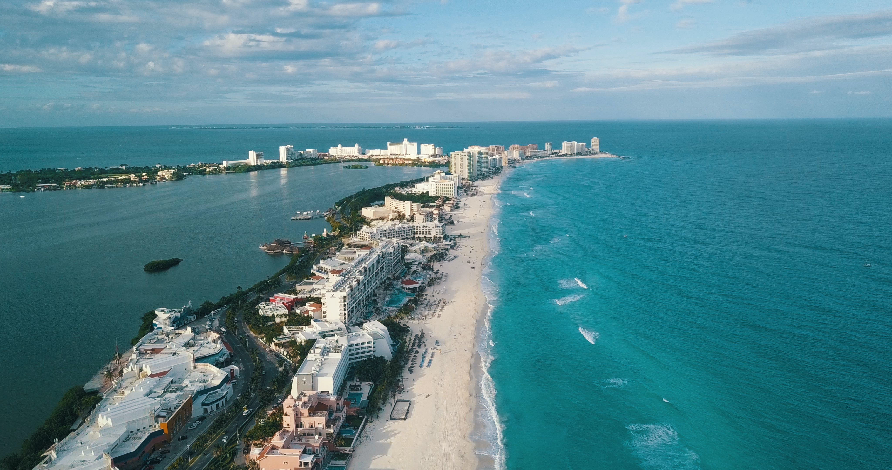
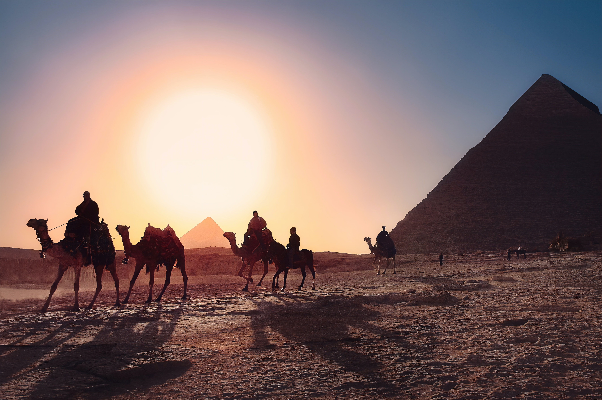

Mas Popualres
París, Francia

"La ciudad de las luces", tal vez la más hermosa y romántica de todas, llena de lugares históricos, y una de las principales capitales culturales, artísticas, gastronómicas, de diseño y moda.
Cancún, México
Sus hermosas playas de azul turquesa, la increíble laguna nichupté, los hoteles de lujo frente al mar, la gastronomía única, sus artesanías, plazas, centros comerciales, el caluroso y fresco clima son solo alguna de las características de Cancún.
Egipto
Egipto es conocido con nombres como: “La madre del mundo” o “Cuna de civilizaciones”, debido a las diferentes civilizaciones que han confluido en su territorio a lo largo de la historia, desde las diferentes dinastías faraónicas hasta las épocas de mayor esplendor del Islam
Dubái, Emiratos Arabes Unidos

Dubái es una de las ciudades modernas más emocionantes del mundo; una minimetrópoli futurista situada en el corazón del golfo Pérsico que ofrece gastronomía, compras, cultura, diseño y entretenimiento de clase mundial.
Machu Picchu, Perú

Machu Picchu es el sitio arqueológico inca más sobresaliente debido a su creativo diseño urbano, la belleza de su arquitectura y el fino trabajo en piedra de sus construcciones. En su planificación se aprovechó notablemente la topografía de la cima de la montaña a la que transformó en una imponente llaqta.
Roma, Italia

Roma es una ciudad italiana, capital de la región del Lacio y de Italia. Con una población de 2 857 321 habitantes, es el municipio más poblado de Italia y la tercera ciudad más poblada de la Unión Europea.